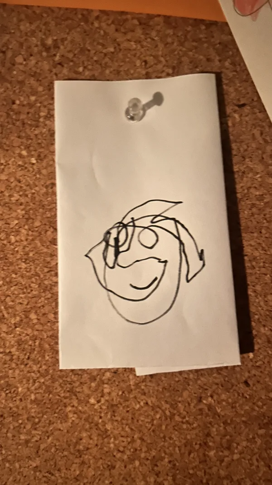

Nothing to show — toggle a filter above.

Sungam (Magnus B. Skarphedinsson) is an Icelandic electronic musician, sound and visual artist based in Oslo, Norway.
My work is driven by a fascination with texture—both as material and method. Whether through Sungam or collaborations with 4411, Quadruplos, and Mr. Silla & Mongoose, texture remains the constant thread, the core inspiration shaping everything I create across music and visual art.
Sonically, I explore the space between electronic music and experimental acoustics. I utilise generative techniques with modular synthesizers, bowed bass, found objects, contact microphone recordings, and field sounds—material that blurs the line between noise and musicality. These elements feed into larger pieces often grounded in techno and jungle, which I use as frameworks to investigate rhythm, density, and the textural possibilities of sound design.
This same texture-focused approach carries through my visual work in video, photography, and painting. It's that compelling tension between organic unpredictability and digital precision that drives everything.
Beyond making music, I'm interested in expanding the tools available for sound creation. I develop Max for Live devices that translate my approach to texture into instruments others can experiment with and build upon.
At its core, my work is about listening—to texture, to the fine details in sound, to what happens when electronic precision meets organic imperfection.
Art
-
Works in ASCII. Homepage is a live text-rendering engine; play. is a browser-based live-coding playground with ~40 demos and a manual.
play.ertdfgcvb.xyz -
Net artist since the late 90s. Deliberately broken and hostile interfaces as formal language. Also made the open-source Electric Zine Maker.
tetrageddon.com -
Generative poetry, software, drawing, tabletop games. Themes of ecology, tool making, collapse, and the labor and care inside those fantasies.
-
Exists only as an avatar; no physical identity confirmed. Runs Panther Modern, a file-based exhibition space for site-specific internet installations.
turboavedon.com -
From 1995. The origin point of the genre.
Tools
-
Oud player who built his own microtonal software (Apotome, Leimma) after finding existing tools culturally biased. Prix Ars Electronica 2021.
apotome.ctm-festival.de -
DIY textile controllers as sound interfaces since 2007. Lichen-based interactive textiles; khipu reimagined as a sonic coding system.
autodios.github.io -
Generative plotter work with the algorithms written up alongside each piece.
-
Made Hydra, the browser-based live coding video synth.
-
Live-coded shaders, GLSL performance.
-
Computer vision and machine learning, usually pointed at something uncomfortable.
-
Made TidalCycles. Writes about pattern and weaving as much as music.
AV
-
Deliberately crude circuits built from cosmetics, sugar, minerals and salvaged components. Sound sculptures with 1960s chips embedded in hard candy.
-
Built Versum, a 3D world where navigating it is the composition.
-
Algorithmic live coding through his own Haskell system, Conductive.
-
Architecture background from UNAM. Live coding, generative art, expanded cinema, 3D animation. Co-runs TOPLAP México.
-
Duo of audiovisual artists and toolmakers. Generative light and modular sound. Recorded in Iceland, released on Bedroom Community.
instagram.com/404.zero -
Custom tools generating real-time composition from data collected off live instruments.
-
Light and sound installations, very architectural.
Hubs
-
Non-commercial wiki of media art and experimental practice. Deepest hole on the list.
-
Directory of works using browser structure and links as visual material.
-
Indie web, ad-free, web 1.0 aesthetic. Browse by tag.
-
Live coding worldwide, strong Latin American nodes.
-
Independent Kampala label, experimental offshoot of Nyege Nyege.
-
Pattern in weaving, code and craft. Small, unusual roster.
-
Artist-run, The Hague. Roster entirely of instrument builders.
-
Bangkok TouchDesigner community, with artist profiles across Southeast Asia.
-
Restored net art works. Nonprofit tied to the New Museum.